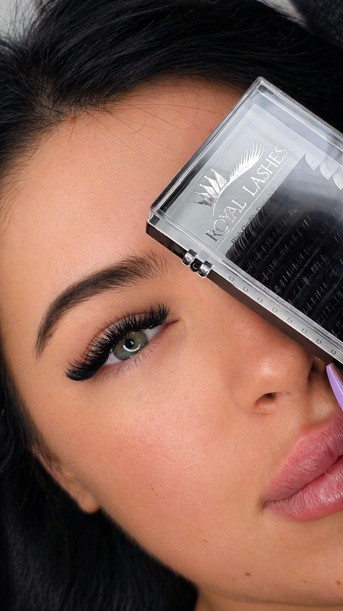

Obrve i trepavice

Ekstenzije trepavica – klasične
Prirodan i elegantan izgled svaki dan
Klasične ekstenzije trepavica savršen su izbor za sve koje žele naglasiti prirodnu ljepotu očiju uz uredan i elegantan izgled. Kod ove tehnike na svaku prirodnu trepavicu aplicira se jedna ekstenzija, čime se postiže prirodan efekt duljih, tamnijih i definiranijih trepavica.
Rezultat su uredne i naglašene oči bez potrebe za svakodnevnim nanošenjem maskare.
Prednosti klasičnih ekstenzija:
- Prirodan izgled
- Vizualno gušće i duže trepavice
- Bez potrebe za maskarom
- Ušteda vremena pri šminkanju
- Lagane i ugodne za nošenje
- Prilagodba duljine i oblika prema željama
Trajanje tretmana: 1.5 – 2 sata
Trajnost: 3 – 5 tjedana. Korekcija se preporučuje svakih 2 – 3 tjedna.

Ekstenzije trepavica – volumenske
Glamurozan izgled i maksimalan volumen
Volumenske ekstenzije trepavica idealan su izbor za osobe koje žele intenzivniji, gušći i glamurozniji izgled trepavica. Ova tehnika podrazumijeva apliciranje više laganih ekstenzija na jednu prirodnu trepavicu kako bi se postigao bogat volumen bez opterećenja prirodnih trepavica.
Efekt se prilagođava željama klijentice — od nježnog volumena do dramatičnog glam izgleda.
Prednosti volumenskih trepavica:
- Gušći i puniji izgled trepavica
- Glamurozan efekt bez maskare
- Naglašeniji pogled i oblik očiju
- Lagane i sigurne za prirodne trepavice
- Dugotrajan rezultat
- Individualno prilagođen izgled
Trajanje tretmana: 2 – 3 sata
Trajnost: 3 – 5 tjedana uz pravilno održavanje. Korekcija se preporučuje svakih 2 – 3 tjedna.

Minival trepavica
Prirodno podignute i uvijane trepavice
Minival trepavica tretman je kojim se prirodne trepavice podižu, uvijaju i vizualno produžuju bez ekstenzija. Ova metoda idealna je za osobe koje žele prirodan izgled i naglašen pogled uz minimalno održavanje.
Rezultat su uredne, podignute i elegantno uvijane trepavice koje otvaraju pogled i traju tjednima.
Prednosti minivala trepavica:
- Prirodan efekt
- Vizualno duže i podignute trepavice
- Bez svakodnevnog uvijanja trepavica
- Dugotrajan rezultat
- Pogodno za osjetljive oči
- Minimalno održavanje
Trajanje tretmana: 45 – 60 minuta
Trajnost: Približno 6 – 8 tjedana, ovisno o prirodnom ciklusu rasta trepavica.

Puder obrve
Prirodno definirane i uredne obrve
Puder obrve moderna su tehnika trajnog šminkanja kojom se postiže nježan, sjenčani efekt prirodno popunjenih obrva. Rezultat su uredne, simetrične i elegantno definirane obrve koje izgledaju prirodno u svakodnevnim situacijama.
Tehnika je prilagođena obliku lica, tonu kože i željama klijentice kako bi rezultat bio što prirodniji i skladniji.
Prednosti puder obrva:
- Prirodan i uredan izgled
- Dugotrajan efekt
- Simetrične i punije obrve
- Ušteda vremena pri šminkanju
- Individualno prilagođen oblik i nijansa
- Pogodno za različite tipove kože
Trajanje tretmana: 2 – 3 sata
Trajnost: 1 – 2 godine, ovisno o tipu kože i načinu njege. Korekcija se preporučuje nakon 4 – 6 tjedana.